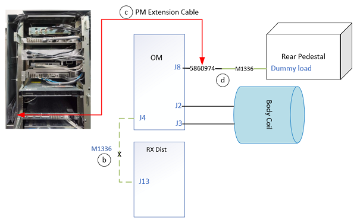
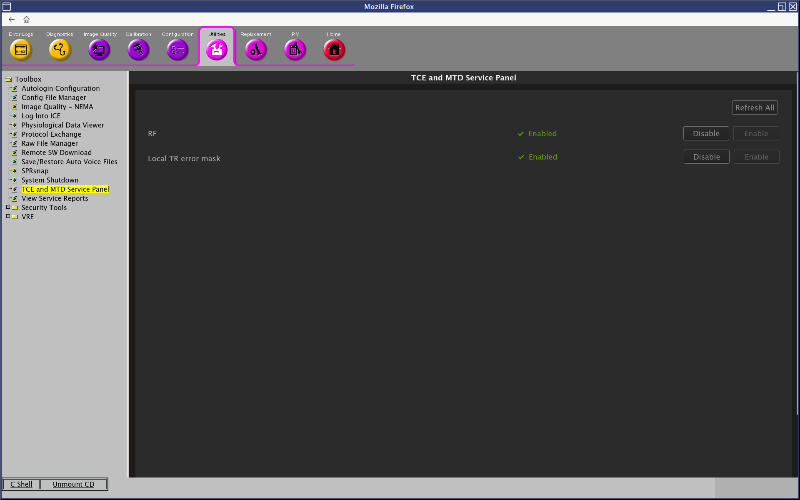
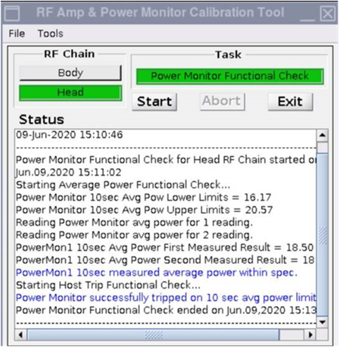
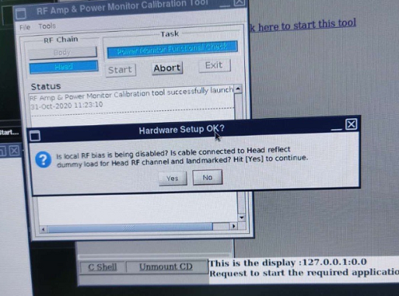
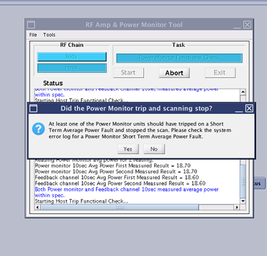
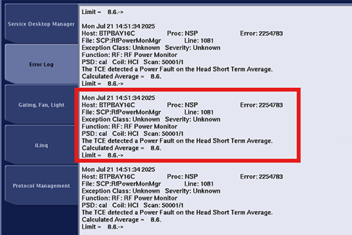

- Object ID: 00000018WIA307FAA50GYZ
- Topic ID: id_2027107 Version: 2.10
- Date: Jul 25, 2025, 2:53:18 AM
Doing power monitor function check for head
Procedure
- Cable setup for check.
- Unplug the cable from OM J8 and Rear Pedestal dummy load.
- Disconnect cable connection (M1336) from OM J4 and DPP Rx Dist J13.
- Get the extension cable (5860974) from system cabinet left side.
- Connect the M1336 and extension cable 5860974 together, then one end to the dummy load, the other end to the OM J8.
Figure 1. Cable Setup 
- No phantom is needed. Landmark on cradle and press the Advance to scan.
- Bypass the monitoring by enabling Local TR error mask on Service Panel.
- Enable RF on Service Panel.
Figure 2. Example of mask Local TR 
Note RF will be automatically disabled while any error mask is enable. Make sure RF is enable before going on with this test. - On the Common Service Desktop, from the Calibration menu, select Calibration > RAP Tool and select Click here to start this tool.
- Select RF chain to Head.
Figure 3. Tool Viewer 
- Click Start.
- Click Yes when the prompt asks if the hardware setup is correct.
Figure 4. Hardware Setup OK? 
- Prompts are displayed during test execution, including a pop up message about the UPM tripping and a power trip error message. Do not click Yes or No. Check the error log in CSD first.

- From the CSD, open the error log. Verify that the error log contains the message that the UPM has “detected a power fault on Head Short Term Average.” If so, select Yes on the pop up message.

- View the results. If all tests pass, select Exit .
- Restore the cable connection with OM/Dummy load/Rx dist.
- A TPS Reset must be performed when testing is complete before scanning resume.